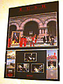
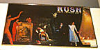
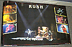
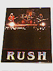

"moving pictures promo"
24" x 36"
Top 2/3 is Moving Pictures album cover, bottom 1/3 has smaller album covers of
Archives, 2112, All The World's A Stage, Hemispheres, A Farewell to Kings and
Permanent Waves on the sides, with three black & white shots of the band in
the middle.
|

"esl album cover"
33" x 19"
Front and back covers of "Exit... Stage Left".
|

"esl concert w/6 smaller pics"
34" x 22"
Background is a concert shot, with six smaller shots on the sides over the
picture. RUSH is written at the top in the font used on Exit... Stage Left.
|

"esl small concert"
17" x 22"
Concert shot of the band, with "Rush" written below in ESL font. Sold at
Dairy Queen.
|